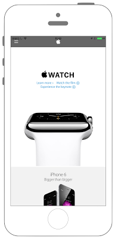

プレビュー画面にエフェクト処理


Swift3.0
AppDelegate.swift
1 2 3 4 5 6 7 8 9 10 11 12 13 14 15 16 17 18 19 20 21 22 23 24 25 26 27 28 29 30 31 32 33 34 35 36 37 38 39 40 41 42 43 44 45 46 47 48 49 50 51 52 53 54 55 56 57 58 59 60 61 62 63 64 65 66 67 68 69 70 71 | // // AppDelegate.swift // UIKit043_3.0 // // Created by KimikoWatanabe on 2016/08/21. // Copyright © 2016年 FaBo, Inc. All rights reserved. // import UIKit @UIApplicationMain class AppDelegate: UIResponder, UIApplicationDelegate { var window: UIWindow? var myEffectView: UIView! /* アプリ起動時に呼ばれる. */ func application(_ application: UIApplication, didFinishLaunchingWithOptions launchOptions: [NSObject: AnyObject]?) -> Bool { print("didFinishLaunchingWithOptions") return true } /* アプリがバックグラウンドになる直前に呼ばれる. */ func applicationWillResignActive(_ application: UIApplication) { print("applicationWillResignActive") let effect: UIBlurEffect = UIBlurEffect(style: UIBlurEffectStyle.light) myEffectView = UIVisualEffectView(effect: effect) myEffectView.frame = CGRect(x:0, y:0, width:UIScreen.main.bounds.size.width, height:UIScreen.main.bounds.size.height) self.window?.addSubview(myEffectView) } /* アプリがバックグラウンドになった時に呼ばれる. */ func applicationDidEnterBackground(_ application: UIApplication) { print("viewDidDisappear") } /* アプリがフォアグラウンドになった時に呼ばれる. */ func applicationWillEnterForeground(_ application: UIApplication) { print("applicationWillEnterForeground") } /* アプリがアクティブになった時に呼ばれる. */ func applicationDidBecomeActive(_ application: UIApplication) { print("applicationDidBecomeActive") if myEffectView != nil { self.myEffectView.removeFromSuperview() } } /* アプリが終了する直前に呼ばれる. */ func applicationWillTerminate(_ application: UIApplication) { print("applicationWillTerminate") } } |
ViewController.swift
1 2 3 4 5 6 7 8 9 10 11 12 13 14 15 16 17 18 19 20 21 22 23 24 25 26 27 28 29 30 31 32 33 34 35 36 37 38 39 40 41 42 43 44 45 46 47 48 | // // ViewController.swift // UIKit043_3.0 // // Created by KimikoWatanabe on 2016/08/21. // Copyright © 2016年 FaBo, Inc. All rights reserved. // import UIKit class ViewController: UIViewController, UIWebViewDelegate { var myWebView : UIWebView! override func viewDidLoad() { super.viewDidLoad() // WebViewを開く. myWebView = UIWebView() myWebView.delegate = self myWebView.frame = self.view.bounds self.view.addSubview(myWebView) let url: URL! = URL(string: "http://www.apple.com") let request: NSURLRequest = NSURLRequest(url: url) // ロード開始. myWebView.loadRequest(request as URLRequest) } /* Webがすべて読み込み終わった時呼ばれる. */ func webViewDidFinishLoad(_ webView: UIWebView) { print("webViewDidFinishLoad") } /* Webがloadされ始めた時、呼ばれる. */ func webViewDidStartLoad(_ webView: UIWebView) { print("webViewDidStartLoad") } override func didReceiveMemoryWarning() { super.didReceiveMemoryWarning() } } |
Swift 2.3
AppDelegate.swift
1 2 3 4 5 6 7 8 9 10 11 12 13 14 15 16 17 18 19 20 21 22 23 24 25 26 27 28 29 30 31 32 33 34 35 36 37 38 39 40 41 42 43 44 45 46 47 48 49 50 51 52 53 54 55 56 57 58 59 60 61 62 63 64 65 66 67 68 69 70 71 | // // AppDelegate.swift // UIKit043_2.3 // // Created by KimikoWatanabe on 2016/08/21. // Copyright © 2016年 FaBo, Inc. All rights reserved. // import UIKit @UIApplicationMain class AppDelegate: UIResponder, UIApplicationDelegate { var window: UIWindow? var myEffectView: UIView! /* アプリ起動時に呼ばれる. */ func application(application: UIApplication, didFinishLaunchingWithOptions launchOptions: [NSObject: AnyObject]?) -> Bool { print("didFinishLaunchingWithOptions") return true } /* アプリがバックグラウンドになる直前に呼ばれる. */ func applicationWillResignActive(application: UIApplication) { print("applicationWillResignActive") let effect: UIBlurEffect = UIBlurEffect(style: UIBlurEffectStyle.Light) myEffectView = UIVisualEffectView(effect: effect) myEffectView.frame = CGRectMake(0, 0, UIScreen.mainScreen().bounds.size.width, UIScreen.mainScreen().bounds.size.height) self.window?.addSubview(myEffectView) } /* アプリがバックグラウンドになった時に呼ばれる. */ func applicationDidEnterBackground(application: UIApplication) { print("viewDidDisappear") } /* アプリがフォアグラウンドになった時に呼ばれる. */ func applicationWillEnterForeground(application: UIApplication) { print("applicationWillEnterForeground") } /* アプリがアクティブになった時に呼ばれる. */ func applicationDidBecomeActive(application: UIApplication) { print("applicationDidBecomeActive") if myEffectView != nil { self.myEffectView.removeFromSuperview() } } /* アプリが終了する直前に呼ばれる. */ func applicationWillTerminate(application: UIApplication) { print("applicationWillTerminate") } } |
ViewController.swift
1 2 3 4 5 6 7 8 9 10 11 12 13 14 15 16 17 18 19 20 21 22 23 24 25 26 27 28 29 30 31 32 33 34 35 36 37 38 39 40 41 42 43 44 45 46 47 48 | // // ViewController.swift // UIKit043_2.3 // // Created by KimikoWatanabe on 2016/08/21. // Copyright © 2016年 FaBo, Inc. All rights reserved. // import UIKit class ViewController: UIViewController, UIWebViewDelegate { var myWebView : UIWebView! override func viewDidLoad() { super.viewDidLoad() // WebViewを開く. myWebView = UIWebView() myWebView.delegate = self myWebView.frame = self.view.bounds self.view.addSubview(myWebView) let url: NSURL! = NSURL(string: "http://www.apple.com") let request: NSURLRequest = NSURLRequest(URL: url) // ロード開始. myWebView.loadRequest(request) } /* Webがすべて読み込み終わった時呼ばれる. */ func webViewDidFinishLoad(webView: UIWebView) { print("webViewDidFinishLoad") } /* Webがloadされ始めた時、呼ばれる. */ func webViewDidStartLoad(webView: UIWebView) { print("webViewDidStartLoad") } override func didReceiveMemoryWarning() { super.didReceiveMemoryWarning() } } |
2.3と3.0の差分
- UIColorの参照方法が変更(UIColor.grayColor()->UIColor.gray)
- CGRect,CGPointの初期化方法の変更(CGRectMake,CGPointMakeの廃止)
- AppDelegateの関数の引数が変更.
- (UIScreen.mainScreen()->UIScreen.main)
- NSURLの廃止、URLに変更
Reference
- UIApplication Class
- https://developer.apple.com/reference/uikit/uiapplication